Measurably evolving populationsAlexei J Drummond, Remco Bouckaert and Walter Xie |
1 Time-stamped data
This tutorial estimates the rate of evolution from a set of virus sequences which have been isolated at different points in time (heterochronous or time-stamped data). The data are 129 sequences from the G (attachment protein) gene of human respiratory syncytial virus subgroup A (RSVA) from various parts of the world with isolation dates ranging from 1956-2002 [2, 1]. RSVA causes infections of the lower respiratory tract causing symptoms that are often indistinguishable from the common cold. By age 3, nearly all children will be infected and a small percentage (<3%) will develop more serious inflammation of the bronchioles requiring hospitalisation.
The aim of this tutorial is to obtain estimates for :
- the rate of molecular evolution
- the date of the most recent common ancestor
- the phylogenetic relationships with measures of statistical support.
The following software will be used in this tutorial:
-
BEAST - this package contains the BEAST program, BEAUti, DensiTree, TreeAnnotator and other utility programs. This tutorial is written for BEAST v2.2.x, which has support for multiple partitions. It is available for download from
http://www.beast2.org. - Tracer - this program is used to explore the output of BEAST (and other Bayesian MCMC programs). It graphically and quantitively summarizes the distributions of continuous parameters and provides diagnostic information. At the time of writing, the current version is v1.6. It is available for download from http://beast.bio.ed.ac.uk/.
- FigTree - this is an application for displaying and printing molecular phylogenies, in particular those obtained using BEAST. At the time of writing, the current version is v1.4.2. It is available for download from http://tree.bio.ed.ac.uk/.
The NEXUS alignment
The data is in a file called RSV2.nex and you can find it in the examples/nexus directory in the directory where BEAST was installed. This file contains an alignment of 129 sequences from the G gene of RSVA virus, 629 nucleotides in length. Import this alignment into BEAUti. Because this is a protein-coding gene we are going to split the alignment into three partitions representing each of the three codon positions. To do this we will click the Split button at the bottom of the Partitions panel and then select the “1 + 2 + 3 frame 3” from the drop-down menu.
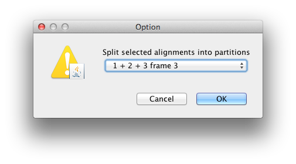
This signifies that the first full codon starts at the third nucleotide in the alignment. This will create three rows in the partitions panel. You will have to re-link the tree and clock models across the three partitions (and name them “tree” and “clock” respectively) before continuing to the next step. The partition panel should now look something like this:
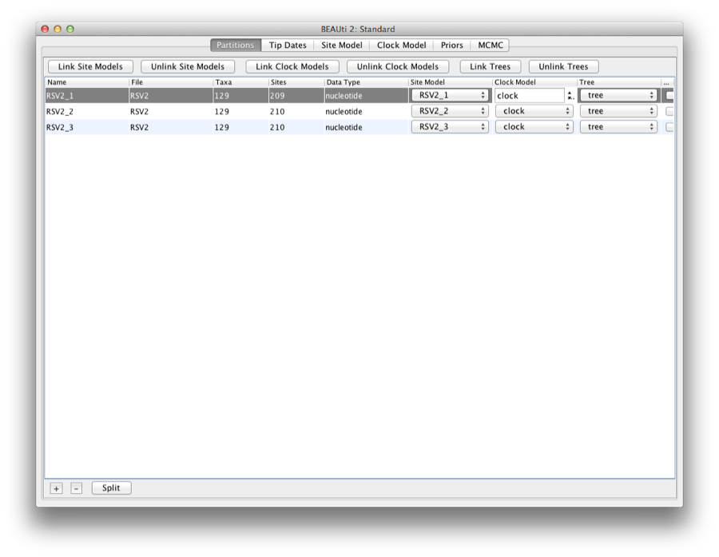
By default all the taxa are assumed to have a date of zero (i.e. the sequences are assumed to be sampled at the same time). In this case, the RSVA sequences have been sampled at various dates going back to the 1950s. The actual year of sampling is given in the name of each taxon and we could simply edit the value in the Date column of the table to reflect these. However, if the taxa names contain the calibration information, then a convenient way to specify the dates of the sequences in BEAUti is to click the checkbox Use tip dates and then use the Guess button at the top of the Tip Dates panel. Clicking this will make a dialog box appear.

Select the option to use everything, choose “after last” from from drop-down box and type‘s’ into the corresponding text box. This will extract the trailing numbers from the taxon names after the last little ’s’, which are interpreted as the year (in this case since 1900) that the sample was isolated.
The dates panel should now look something like this:
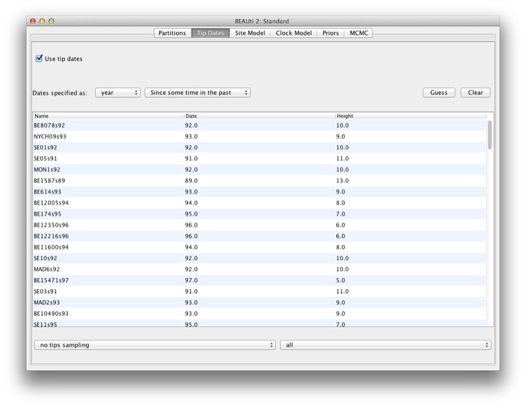
Setting the substitution model
We will use the HKY model with empirical base frequencies for all three partitions. To do this first link the site partitions and then choose HKY and Empirical from the Subst Model and Frequencies drop-boxes. Also check the estimate box for the Mutation Rate,which will finally trigger to check the “Fix mean mutation rate” box.
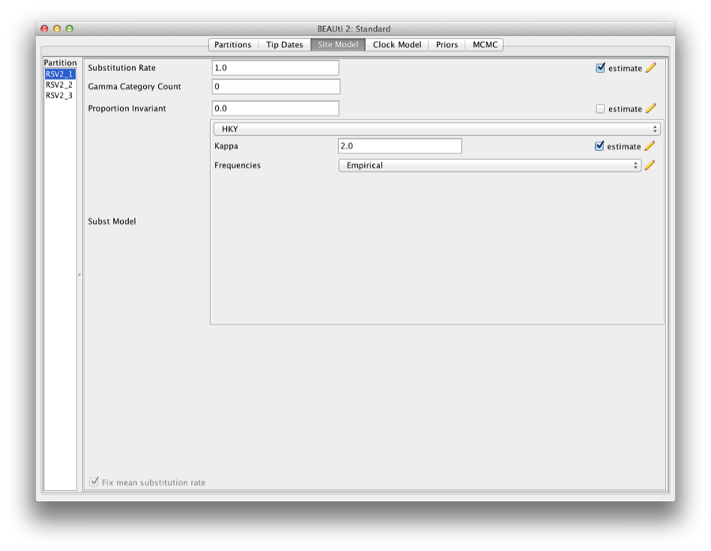
Then, hold ‘shift’ key to select all site models on the left side, and click OK to clone the setting from defined site model (Figure 1). Go through each site model, as you can see, their configurations are same now.
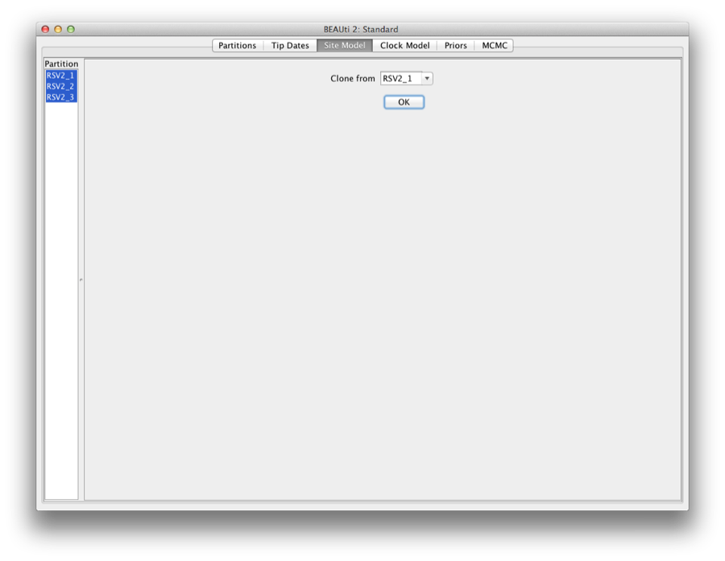
Figure 1: clone configuration from one site model to others.
1.0.1 Priors
To set up the priors, select the “Priors” tab. Choose “Coalescent Constant Population” for the tree prior. Set the prior on the clockRate parameter to a log-normal with M=−5 and S=1.25.
1.1 Setting the MCMC options
For this dataset let’s initially set the chain length to 2,000,000 as this will run reasonably quickly on most modern computers. Set the sampling frequencies for the screen to to 10,000, the trace log file to 400 and the trees file to 400.
Running BEAST
Save the BEAST file (e.g. RSV2.xml) and run it in BEAST.
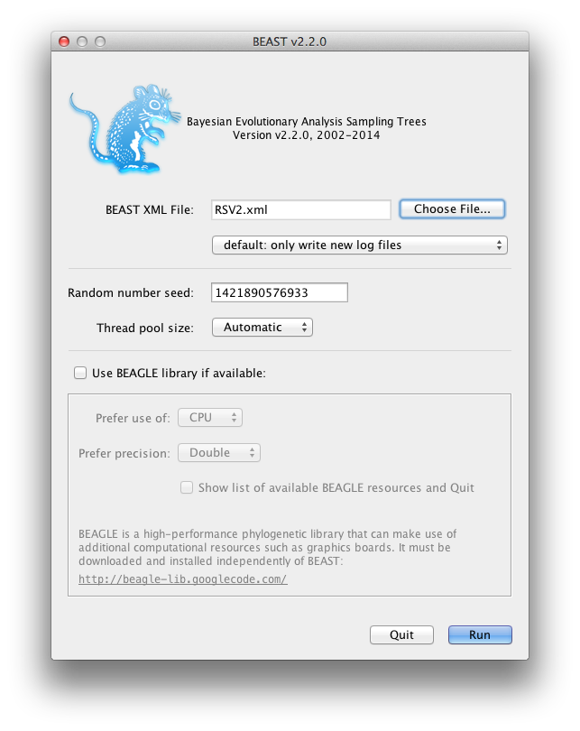
Figure 2: A screenshot of BEAST.
Now run BEAST and when it asks for an input file, provide your newly created XML file as input. BEAST will then run until it has finished reporting information to the screen. The actual results files are save to the disk in the same location as your input file. The output to the screen will look something like this:
BEAST v2.2.0, 2002-2014
Bayesian Evolutionary Analysis Sampling Trees
Designed and developed by
Remco Bouckaert, Alexei J. Drummond, Andrew Rambaut and Marc A. Suchard
Department of Computer Science
University of Auckland
remco@cs.auckland.ac.nz
alexei@cs.auckland.ac.nz
Institute of Evolutionary Biology
University of Edinburgh
a.rambaut@ed.ac.uk
David Geffen School of Medicine
University of California, Los Angeles
msuchard@ucla.edu
Downloads, Help & Resources:
http://beast2.org/
Source code distributed under the GNU Lesser General Public License:
http://github.com/CompEvol/beast2
BEAST developers:
Alex Alekseyenko, Trevor Bedford, Erik Bloomquist, Joseph Heled,
Sebastian Hoehna, Denise Kuehnert, Philippe Lemey, Wai Lok Sibon Li,
Gerton Lunter, Sidney Markowitz, Vladimir Minin, Michael Defoin Platel,
Oliver Pybus, Chieh-Hsi Wu, Walter Xie
Thanks to:
Roald Forsberg, Beth Shapiro and Korbinian Strimmer
... ...
1999000 -6131.9540 80.2 -5496.4810 -635.4730 2m3s/Msamples
2000000 -6142.7389 80.7 -5506.2818 -636.4570 2m3s/Msamples
Operator Tuning #accept #reject Pr(m) Pr(acc|m)
ScaleOperator(treeScaler.t:tree) 0.7224 546 71568 0.0360 0.0076 Try setting scaleFactor to about 0.85
ScaleOperator(treeRootScaler.t:tree) 0.6019 5076 66818 0.0360 0.0706 Try setting scaleFactor to about 0.776
Uniform(UniformOperator.t:tree) - 387274 334094 0.3601 0.5369
SubtreeSlide(SubtreeSlide.t:tree) 3.9556 57963 302626 0.1801 0.1607
Exchange(narrow.t:tree) - 88179 271422 0.1801 0.2452
Exchange(wide.t:tree) - 153 71541 0.0360 0.0021
WilsonBalding(WilsonBalding.t:tree) - 365 71560 0.0360 0.0051
ScaleOperator(StrictClockRateScaler.c:clock) 0.7869 17571 54573 0.0360 0.2436
UpDownOperator(strictClockUpDownOperator.c:clock) 0.7594 673 70876 0.0360 0.0094 Try setting scaleFactor to about 0.871
ScaleOperator(KappaScaler.s:RSV2_1) 0.4069 581 1743 0.0012 0.2500
DeltaExchangeOperator(FixMeanMutationRatesOperator) 0.3833 8247 39773 0.0240 0.1717
ScaleOperator(KappaScaler.s:RSV2_2) 0.4276 583 1790 0.0012 0.2457
ScaleOperator(KappaScaler.s:RSV2_3) 0.4421 589 1774 0.0012 0.2493
ScaleOperator(PopSizeScaler.t:tree) 0.5907 18802 53241 0.0360 0.2610
Tuning: The value of the operator's tuning parameter, or '-' if the operator can't be optimized.
#accept: The total number of times a proposal by this operator has been accepted.
#reject: The total number of timEnd likelihood: -6142.738945357851
es a proposal by this operator has been rejected.
Pr(m): The probability this operator is chosen in a step of the MCMC (i.e. the normalized weight).
Pr(acc|m): The acceptance probability (#accept as a fraction of the total proposals for this operator).
Total calculation time: 249.968 seconds
Analysing the BEAST output
Note that the effective sample sizes (ESSs) for many of the logged quantities are small (ESSs less than 100 will be highlighted in red by Tracer). This is not good. A low ESS means that the trace contains a lot of correlated samples and thus may not represent the posterior distribution well. In the bottom right of the window is a frequency plot of the samples which is expected given the low ESSs is extremely rough.
If we select the tab on the right-hand-side labelled ‘Trace’ we can view the raw trace, that is, the sampled values against the step in the MCMC chain.
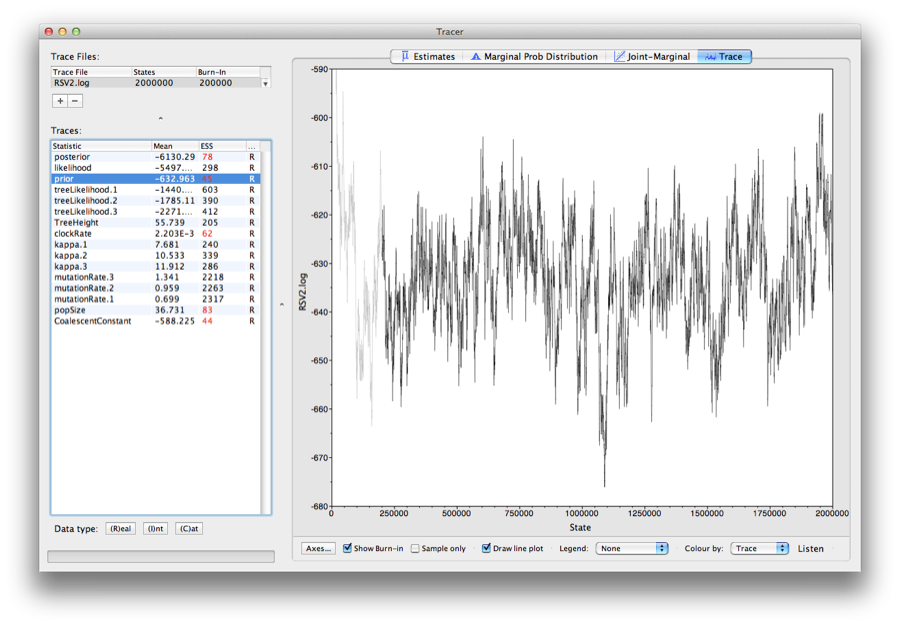
Here you can see how the samples are correlated. There are 5000 samples in the trace (we ran the MCMC for 2,000,000 steps sampling every 400) but adjacent samples often tend to have similar values. The ESS for the absolute rate of evolution (clockRate) is about 62 so we are only getting 1 independent sample to every 81=5000/62 actual samples). With a short run such as this one, it may also be the case that the default burn-in of 10% of the chain length is inadequate. Not excluding enough of the start of the chain as burn-in will render estimates of ESS unreliable.
The simple response to this situation is that we need to run the chain for longer. Given the lowest ESS (for the constant coalescent) is 44, it would suggest that we have to run the chain for at least 5 times the length to get reasonable ESSs that are >200. So let’s go for a chain length of 10,000,000 and log every 2,000. Go back to the MCMC options section in BEAUti, and create a new BEAST XML file with a longer chain length. Now run BEAST and load the new log file into Tracer (you can leave the old one loaded for comparison).
Click on the Trace tab and look at the raw trace plot.
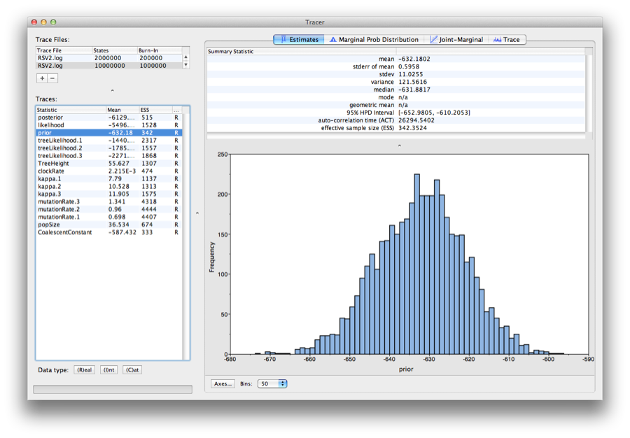
Again we have chosen options that produce 5000 samples and with an ESS of about 342 there is still auto-correlation between the samples but >340 effectively independent samples will now provide a very good estimate of the posterior distribution. There are no obvious trends in the plot which would suggest that the MCMC has not yet converged, and there are no significant long range fluctuations in the trace which would suggest poor mixing.
As we are satisfied with the mixing we can now move on to one of the parameters of interest: substitution rate. Select clockRate in the left-hand table. This is the average substitution rate across all sites in the alignment. Now choose the density plot by selecting the tab labeled Marginal Density. This shows a plot of the marginal posterior probability density of this parameter. You should see a plot similar to this:
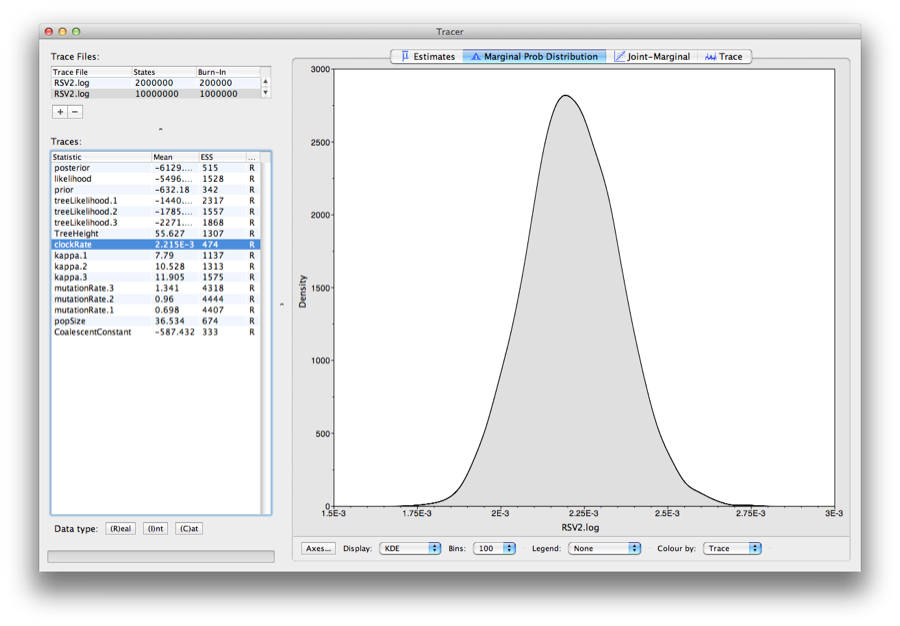
As you can see the posterior probability density is roughly bell-shaped. There is some sampling noise which would be reduced if we ran the chain for longer or sampled more often but we already have a good estimate of the mean and HPD interval. You can overlay the density plots of multiple traces in order to compare them (it is up to the user to determine whether they are comparable on the the same axis or not). Select the relative substitution rates for all three codon positions in the table to the left (labelled mutationRate.1, mutationRate.2 and mutationRate.3). You will now see the posterior probability densities for the relative substitution rate at all three codon positions overlaid:
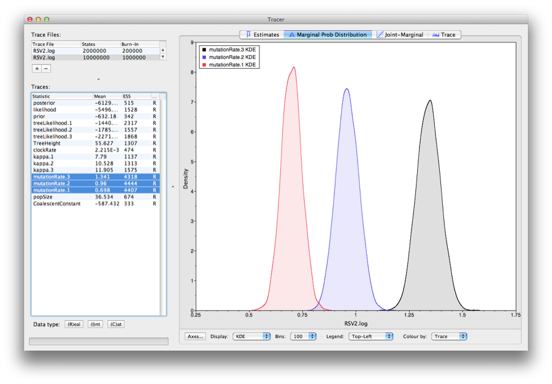
Summarizing the trees
Use the program TreeAnnotator to summarize the tree and view the results in Figtree (Figure 3).
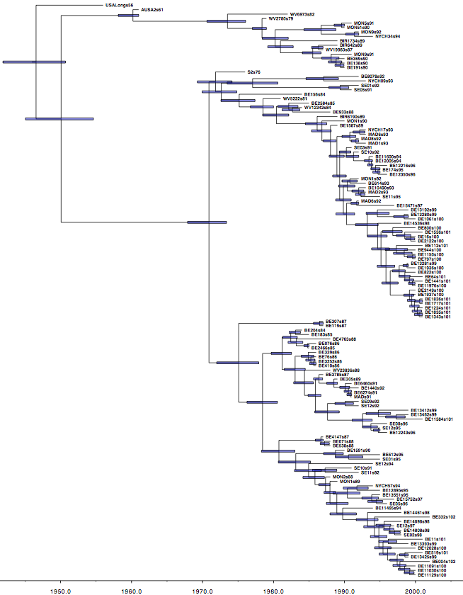
Figure 3: The Maximum clade credibility tree for the G gene of 129 RSVA-2 viral samples.
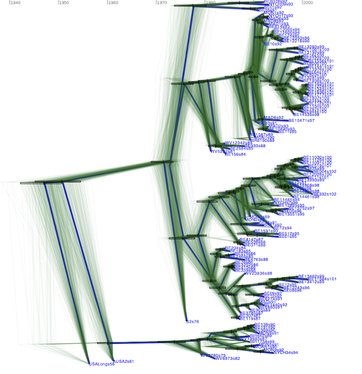
DensiTree with clade height bars for clades with over 50% support. Root canal tree represents maximum clade credibility tree.
Questions
In what year did the common ancestor of all RSVA viruses sampled live? What is the 95% HPD?
Bonus section: Bayesian Skyline plot
We can reconstruct the population history using the Bayesian Skyline plot. In order to do so, load the XML file into BEAUti, select the priors-tab and change the tree prior from coalescent with constant population size to coalescent with Bayesian skyline. Note that an extra item is added to the priors called ‘Markov chained population sizes’ which is a prior that ensures dependence between population sizes.
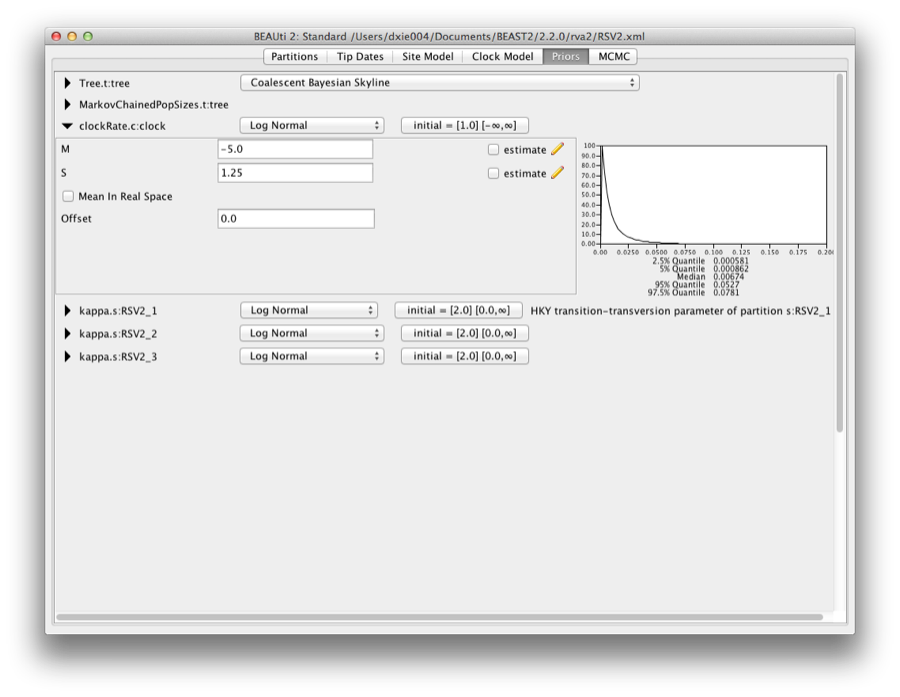
By default the number of groups used in the skyline analysis is set to 5, To change this, select menu View/Show Initialization panel and a list of parameters is shown. Select bPopSizes.t:tree and change the dimension to 3. Likewise, selection bGroupSizes.t:tree and change its dimension to 3. The dimensions of the two parameters should be the same. More groups mean more population changes can be detected, but it also means more parameters need to be estimated and the chain runs longer. The extended Bayesian skyline plot automatically detects the number of changes, so it could be used as an alternative tree prior.
This analysis requires a bit longer to converge, so change the MCMC chain length to 10 million, and the log intervals for the trace-log and tree-log to 10 thousand. Then, save the file and run BEAST.
To plot the population history, load the log file in tracer and select the menu Analysis/Bayesian Skyline Reconstruction.
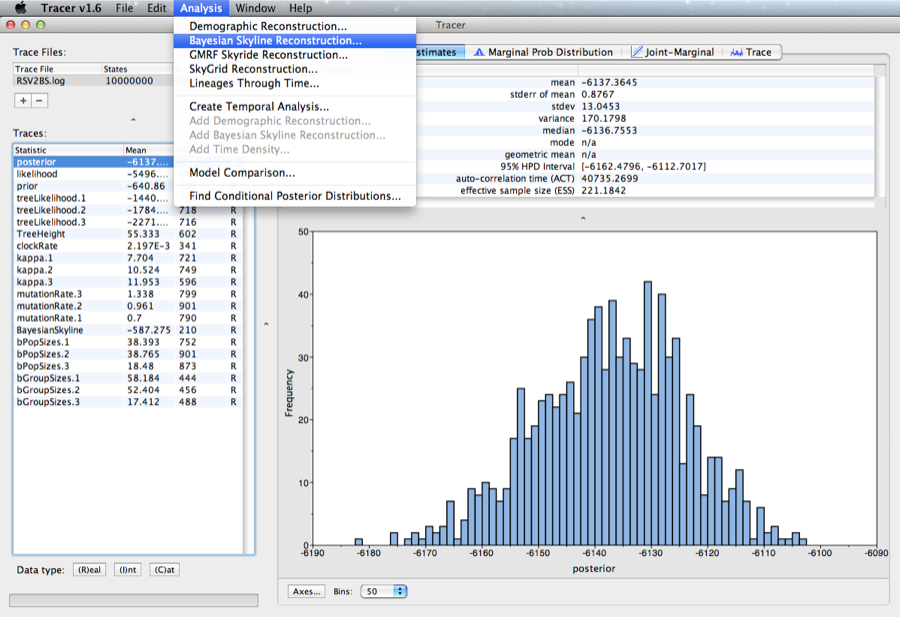
A dialog is shown where you can specify the tree file associated with the log file. Also, since the youngest sample is from 2002, change the entry for age of youngest tip to 2002.

After some calculation, a graph appears showing population history where the median and 95% HPD intervals are plotted. After selecting the ‘solid interval’ checkbox, the graph should look something like this.
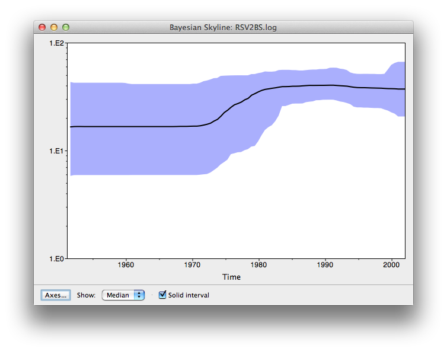
Questions
- By what amount did the effective population size of RSVA grow from 1970 to 2002 according to the BSP?
- What are the underlying assumptions of the BSP? Are the violated by this data set?
1.2 Exercise
Change the Bayesian skyline prior to extended Bayesian skyline plot (EBSP) prior and run till convergence. EBSP produces an extra log file, called EBSP.$(seed).log where $(seed) is replaced by the seed you used to run BEAST. A plot can be created by running the EBSPAnalyser utility, and loading the output file in a spreadsheet.
How many groups are indicated by the EBSP analysis? This is much lower than for BSP. How does this affect the population history plots?
References
- [1]
- Kalina T Zlateva, Philippe Lemey, Elien Moës, Anne-Mieke Vandamme, and Marc Van Ranst, Genetic variability and molecular evolution of the human respiratory syncytial virus subgroup b attachment g protein, J Virol 79 (2005), no. 14, 9157–67.
- [2]
- Kalina T Zlateva, Philippe Lemey, Anne-Mieke Vandamme, and Marc Van Ranst, Molecular evolution and circulation patterns of human respiratory syncytial virus subgroup a: positively selected sites in the attachment g glycoprotein, J Virol 78 (2004), no. 9, 4675–83.
This document was translated from LATEX by HEVEA.